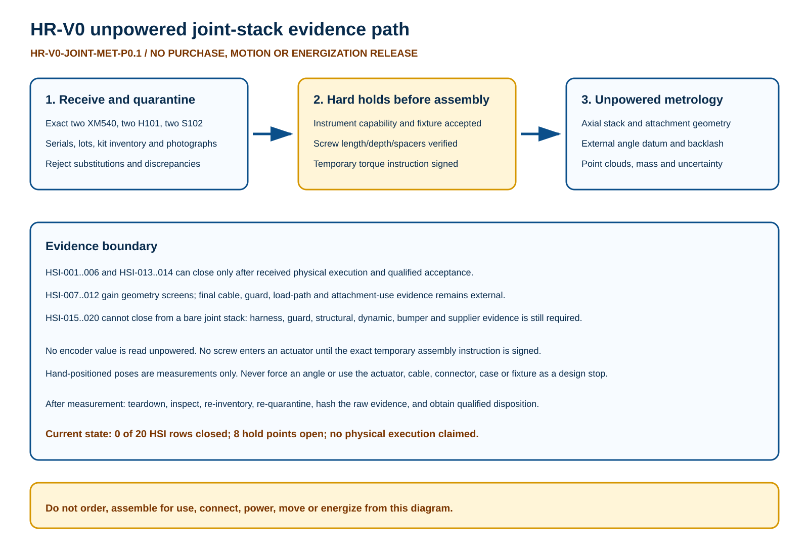

What this fixes
The earlier plan stopped at “receive and measure.” This package identifies six exact articles, 18 sequenced operations, eight hard holds, six instrument classes, one raw record schema and a direct route for every HSI input.
Assembly boundary
Loose-part receiving and metrology come first. Temporary stack assembly remains blocked until exact screw length, mounting depth, spacer placement, torque, reuse and fixture instructions are signed.
Power boundary
No source-capable equipment, actuator cable or U2D2 may be present. External mechanical angle data replaces the incorrect idea of reading encoder zero while unpowered.
Readable evidence path

Hard hold points
| Hold | Before | Condition | Failure action |
|---|---|---|---|
| JSM-HP-001 | JSM-OP-002 | Separate program-owner purchase authorization exists for each exact evaluation line | Do not order; retain NOT RECEIVED state |
| JSM-HP-002 | JSM-OP-004 | Every article is received, quarantined, photographed and reconciled to its exact SKU and kit inventory | Quarantine and open nonconformance; no fit or assembly |
| JSM-HP-003 | JSM-OP-006 | Instrument identities, calibrations, uncertainty methods and provisional capability are accepted | Stop measurement; do not infer missing values |
| JSM-HP-004 | JSM-OP-008 | A non-damaging fixture/restraint method and article support plan are reviewed | Do not articulate or fixture the joint |
| JSM-HP-005 | JSM-OP-009 | Exact screw identity/length, mounting depth, spacer placement, temporary torque, reuse and locking prohibition are released in writing | No screw enters an actuator mounting point; loose-part metrology only |
| JSM-HP-006 | JSM-OP-009 | No power source, U2D2, actuator cable, battery or energized instrument connection is present in the controlled area | Stop, remove source-capable equipment and re-inspect |
| JSM-HP-007 | JSM-OP-011 | J1 and J2 serials, frame kit lots, temporary hardware allocation, fixture transform and source commit are frozen in one immutable manifest | Do not record comparative geometry |
| JSM-HP-008 | JSM-OP-017 | Raw data, point clouds, photographs, uncertainty records and nonconformances are complete | Keep article assembled and quarantined; do not release or discard evidence |
Operation traveler
| Operation | Phase | Action | HSI | State |
|---|---|---|---|---|
| JSM-OP-001 | AUTHORIZATION | Open a controlled traveler; record source commit, reviewer roles and exact requested articles | NONE | NOT EXECUTED |
| JSM-OP-002 | ACQUIRE | After JSM-HP-001 only, order the exact evaluation articles under the existing Batch A authority path | HSI-001;HSI-002 | NOT AUTHORIZED |
| JSM-OP-003 | RECEIVE | Receive, quarantine, photograph, weigh and record every marking, serial, lot/date and package condition | HSI-001;HSI-002 | NOT EXECUTED |
| JSM-OP-004 | INVENTORY | Inventory H101/S102 frame, idler, every included screw by type/length and every spacer ring; keep J1 and J2 kits separate | HSI-002 | NOT EXECUTED |
| JSM-OP-005 | SOURCE CHECK | Verify thrust washer and horn/shaft index condition, idler identity, drawing revision and manufacturer assembly cautions | HSI-001;HSI-002;HSI-009;HSI-011 | NOT EXECUTED |
| JSM-OP-006 | METROLOGY SETUP | Qualify instruments, environmental conditions, fixture coordinate system and uncertainty budget | HSI-003..014 | NOT EXECUTED |
| JSM-OP-007 | LOOSE-PART METROLOGY | Measure loose actuator/frame/idler/spacer interfaces and mounting-point depths before any threaded assembly | HSI-003..006;HSI-009..012 | NOT EXECUTED |
| JSM-OP-008 | FIXTURE REVIEW | Prove the fixture supports the links without loading the actuator case, connector, cable aperture or candidate stop surfaces | HSI-007;HSI-008 | NOT EXECUTED |
| JSM-OP-009 | TEMPORARY STACK | After JSM-HP-005/006 only, assemble J1 and J2 separately using the exact signed temporary hardware instruction; do not add cable or threadlocker | HSI-003..006;HSI-009..012 | NOT AUTHORIZED |
| JSM-OP-010 | CONFIG FREEZE | Freeze article serials/lots, part allocation, screw/spacer allocation, fixture transform and source commit | HSI-001;HSI-002 | NOT EXECUTED |
| JSM-OP-011 | AXIAL STACK | Measure assembled fixed and moving outer faces relative to an externally realized joint axis | HSI-003;HSI-004;HSI-005;HSI-006 | NOT EXECUTED |
| JSM-OP-012 | ANGLE DATUM | Establish external mechanical zero and record repeated bidirectional hand-positioned backlash without reading or inferring encoder position | HSI-013;HSI-014 | NOT EXECUTED |
| JSM-OP-013 | ENVELOPE | Hand-position only at reviewer-approved measurement poses; scan both sides including screws and tool/service envelopes; never force an angle or use the actuator as a stop | HSI-007;HSI-008 | NOT EXECUTED |
| JSM-OP-014 | ATTACHMENT | Reconcile manufacturer-supported attachment features to received metrology; mark every unused/unapproved hole and shared/longer-fastener proposal as unavailable | HSI-009;HSI-010;HSI-011;HSI-012 | NOT EXECUTED |
| JSM-OP-015 | MASS | Record individual and temporary-stack masses with tare and uncertainty | HSI-017;HSI-018 (mass input only) | NOT EXECUTED |
| JSM-OP-016 | DEPENDENCY HOLD | Record HSI-015..020 as external dependencies; do not simulate cable/guard/load/bumper/supplier evidence with the bare stack | HSI-015..020 | NOT EXECUTED |
| JSM-OP-017 | TEARDOWN | After evidence hold closure, unload, dismantle using the signed method, inspect threads/frames/case/washer/spacers, re-inventory and re-quarantine | NONE | NOT EXECUTED |
| JSM-OP-018 | DISPOSITION | Qualified reviewers disposition every result and nonconformance; preserve all HSI values as OPEN until signed evidence is accepted | HSI-001..020 | NOT EXECUTED |
HSI route
| HSI | Input | Operation | R84 potential | Remaining dependency |
|---|---|---|---|---|
| HSI-001 | Received actuator identity | JSM-OP-002/003/010 | YES after purchase/receipt | Program-owner approval and physical receipt |
| HSI-002 | Received frame/idler identity | JSM-OP-002/003/004/010 | YES after purchase/receipt | Program-owner approval and physical receipt |
| HSI-003 | J1 moving axial faces | JSM-OP-007/009/011 | YES after holds | Received stack and qualified temporary-assembly method |
| HSI-004 | J1 fixed axial faces | JSM-OP-007/009/011 | YES after holds | Received stack and qualified temporary-assembly method |
| HSI-005 | J2 moving axial faces | JSM-OP-007/009/011 | YES after holds | Received stack and qualified temporary-assembly method |
| HSI-006 | J2 fixed axial faces | JSM-OP-007/009/011 | YES after holds | Received stack and qualified temporary-assembly method |
| HSI-007 | J1 side envelope | JSM-OP-008/013 | SCREENING after holds | Final configured fasteners, cable, guard and service tooling |
| HSI-008 | J2 side envelope | JSM-OP-008/013 | SCREENING after holds | Final configured fasteners, cable, guard and service tooling |
| HSI-009 | J1 fixed attachments | JSM-OP-007/014 | GEOMETRY ONLY | Manufacturer-supported use and accepted load path |
| HSI-010 | J1 moving attachments | JSM-OP-007/014 | GEOMETRY ONLY | Manufacturer-supported use and accepted load path |
| HSI-011 | J2 fixed attachments | JSM-OP-007/014 | GEOMETRY ONLY | Manufacturer-supported use and accepted load path |
| HSI-012 | J2 moving attachments | JSM-OP-007/014 | GEOMETRY ONLY | Manufacturer-supported use and accepted load path |
| HSI-013 | J1 external datum/backlash | JSM-OP-012 | YES after holds | Encoder calibration remains later powered work |
| HSI-014 | J2 external datum/backlash | JSM-OP-012 | YES after holds | Encoder calibration remains later powered work |
| HSI-015 | Cable/connector/strain relief | JSM-OP-016 | NO | Configured received harness and later scan |
| HSI-016 | Guard/access sweep | JSM-OP-016 | NO | Received/released guard and later inspection |
| HSI-017 | Stop radius/load path | JSM-OP-015/016 | MASS INPUT ONLY | Selected topology and qualified structural model |
| HSI-018 | Effective/reflected inertia | JSM-OP-015/016 | MASS INPUT ONLY | Instrumented dynamic characterization |
| HSI-019 | Bumper/retention | JSM-OP-016 | NO | Exact selection and manufacturer evidence |
| HSI-020 | Supplier DFM/FAI | JSM-OP-016 | NO | Selected topology, supplier and released drawings |